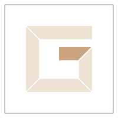

Gera Péter · bútorasztalos, intarziakészítő
Bútor, ami pontosan a helyére készül.
Konyha, beépített szekrény vagy egyetlen különleges darab. Felmérem a teret, megtervezem, és a műhelyben úgy készítem el, hogy minden illesztés a helyén legyen.
A műhely szemlélete
Nincs két egyforma faanyag. Ezért nincs két egyforma bútor sem.
Arány
A bútor a térhez készül: a falakhoz, a nyílásokhoz és ahhoz, ahogy használni fogják.
Anyag
Tömörfa, furnér, intarzia — minden felülethez a hozzá illő anyagot választjuk ki közösen.
Illesztés
A jó bútoron az illesztés nem tűnik fel. Csak az, hogy minden a helyén van.
Intarzia
Ahol a mesterségből művészet lesz.
Az intarziánál különböző színű fákból vágok ki apró darabokat, és úgy illesztem őket egymás mellé, hogy mintát, díszítést vagy akár képet adjanak.
Asztallapon, dobozon, ajtón vagy falon — önálló darabként, vagy egy bútor díszeként.
- Rozetta
- Monogram
- Geometrikus minta
- Kép
Szolgáltatások
Amit tervezek és elkészítek
Minden munka méretre készül. Ha még nincs kész elképzelése, a felmérésen együtt kitaláljuk a formát, az anyagot és a részleteket.
01 · Felmérés
Így dolgozom
Egy tálaló útja, a felméréstől a beépítésig
- 01 · Felmérés
Megnézem a helyet
Méretet veszek, megnézem a falakat, a nyílásokat, a csatlakozásokat. Megbeszéljük, mire fogják használni a bútort.
- 02 · Terv
Rajz és anyagválasztás
Korpusz, osztás, fafajok, felületek. Az ajánlat ehhez a rajzhoz készül, pontos tételekkel és határidővel.
- 03 · Készítés
Szabás és illesztés a műhelyben
Ajtók, fiókok, a fiókoknál akár fecskefarkas kötéssel. Minden lépést magam végzek, így végig kézben tartom a minőséget.
- 04 · Beépítés
Felület, vasalatok, beépítés
Felületkezelés, fogantyúk, beállítás a helyszínen. Tisztán, kész bútorként adom át.
Munkák
Elkészült munkák
Ide kerülnek a műhely saját fotói. Addig vázlatrajzok mutatják, milyen típusú munkák kapnak helyet a galériában.
MUNKAK, js/gera.js).Hasonlót szeretne? Kérjen ajánlatot →
Portré helyeGera Péter a műhelyben — saját fotó
Rólam
Gyerekkorom óta a fával dolgozom.
Bútorasztalosként modern és klasszikus darabokat is készítek. Az intarziánál különböző fafajokból rakok ki mintát — ott lesz a mesterségből igazán alkotás.
Minden megrendelés beszélgetéssel és helyszíni felméréssel kezdődik: megnézem a teret, megkérdezem, mire használják majd a bútort, és csak utána tervezek.
Ajánlatkérés
Meséljen a térről — a többit együtt kitaláljuk.
Írja le röviden, mire gondolt, vagy hívjon. Ha van, küldjön fotót a helyről vagy egy vázlatot: ez sokat segít az első becslésben.
Telefon+36 20 276 7939